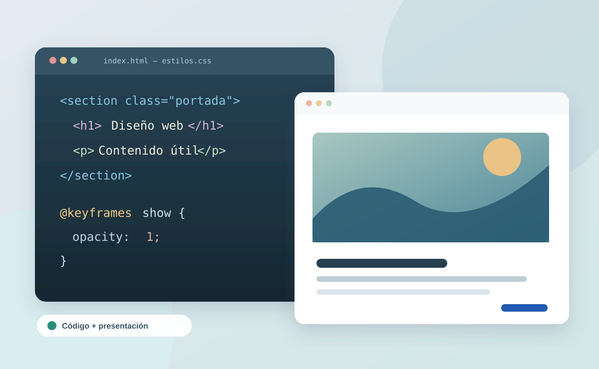
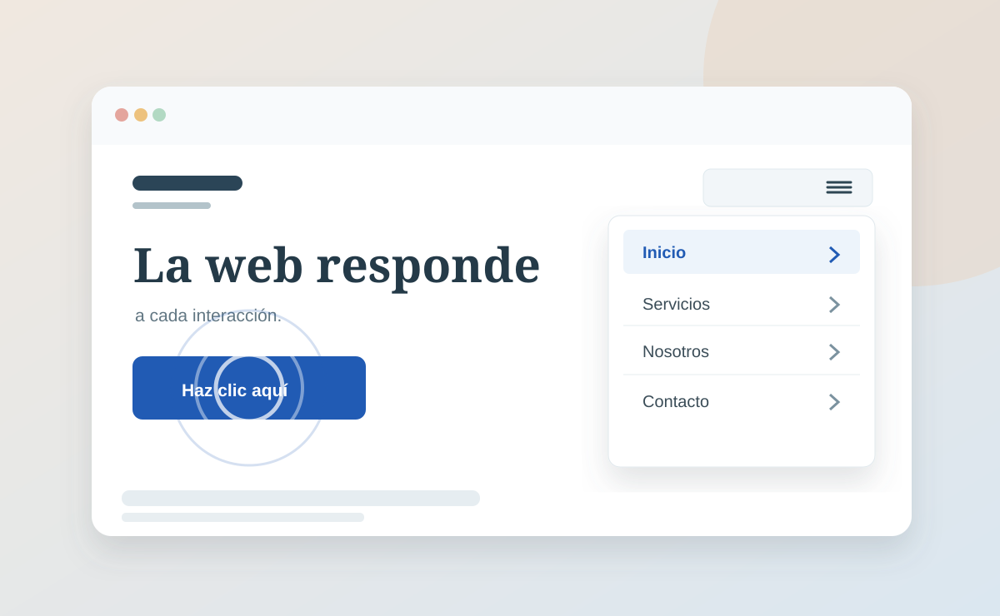

01 / LECTURA
El movimiento como parte del diseño web
Una página no necesita animaciones complejas para sentirse interactiva. A veces, un pequeño movimiento ayuda al usuario a comprender qué está sucediendo.
Las hojas de estilo en cascada permiten definir colores, tamaños, posiciones y distribuciones. Además, con las propiedades de animación de CSS, también podemos controlar cómo cambian los elementos de la interfaz .
Con
@keyframes
se establece el estado inicial y final de una animación. Después, la propiedad
animation
determina su duración, velocidad y repetición. El resultado puede ser tan simple como
una transición suave o un elemento que gira sin detenerse.

1. La navegación responde a nuestras acciones
Un menú hamburguesa ocupa poco espacio y permite mostrar u ocultar opciones cuando el usuario lo necesita. En la cabecera, el icono de tres líneas permite desplegar las opciones de navegación sin ocupar espacio de forma permanente.
El diseño de las tres líneas se obtiene mediante un elemento y los pseudoelementos
::before
y
::after
. Al activar el menú, JavaScript agrega la clase
active
, mientras que CSS ejecuta la animación de entrada
slideIn
.

2. Un botón también puede dar respuesta visual
Al hacer clic en un botón, el efecto de onda o ripple genera un círculo en el punto donde se ha pulsado. Este círculo aumenta de tamaño y desaparece gradualmente.
JavaScript obtiene la posición del clic y crea un elemento temporal. CSS se encarga de
animarlo utilizando
transform: scale()
y
opacity
. Ambas tecnologías cumplen funciones diferentes y complementarias.